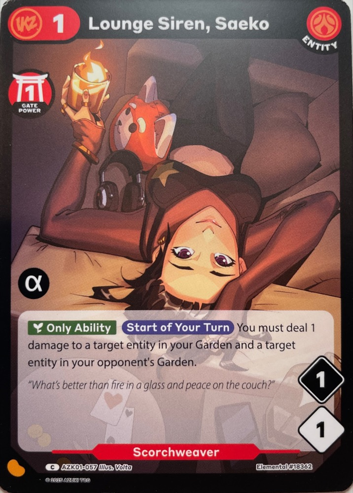

Through a screen, “authentic” is always someone’s judgment. So Cairn makes judgment accountable — an agent on the evidence, an escrow on the money, a record that outlives the trade. Lies don’t become impossible. They stop being free. In pilot now, with the Azuki TCG.
Real money. Rarely refundable. And the truth arrives after the card does.
Is it genuine? Is the grade honest? Will it even ship? You trust all of it at once, and if any part is a lie, you learn it too late. There is no undo.
The usual fix is to rent someone else's trust — a marketplace, an auction house, a grader. It works, but it's priced all over the map, and none of it tells you whether this seller is safe. Here's what trusting one $6,000 card can run:
Same card, wildly different cost — and the cheapest is the one nobody sells you: a seller you already trust. No one adds it up, so you overpay to feel safe, skip the check you needed, or take the leap and hope. Trust is the real price, and right now it's unpriced and unaccountable.
Safety is clerical. Vetting a $6,000 trade with a stranger means cross-referencing them across their shop, their receipts, their eBay history; re-pulling comps; holding six dimensions of trust at once. Exhausting for you. Nothing for an agent.
Faced with all that, you'd want one number — just tell me it's safe. That number would be a lie; it hides every dimension it averaged — including the one that should stop you. So the agent holds the whole picture and hands you only what would change your mind.
You want a number.
Your agent keeps the vector.
One card, one honest read: what it is, who's selling, what it's worth, and the one thing still unproven. You're interrupted only when something spends money or needs your eyes.
It reads your cards and the evidence, and ranks what it can and can't vouch for. Judgment, labeled as judgment, never dressed up as proof. Out-of-scope and overpriced offers never reach you.
Every photo, scan, and claim — signed and pinned to the record so it can't be quietly changed. A vector, never a verdict: readable, still yours or an arbiter's to weigh.
The contract holds the money in escrow, locks the terms, and anchors every claim by hash. Accept on arrival and the funds release; if something's wrong, the claim is already on the record, with the evidence to compare. Nothing rests on the seller's word — only on this, and it outlives the trade.

No dashboards, no jargon. Point your camera at a card — the agent reads it, matches the catalog row, and records what it saw. Your photo is the evidence.
And the part most marketplaces bury: what is not proven, named in plain language, before any money moves.
The full record — identifiers, hashes, the trade itself — is one gesture away, on the dark bench.
A cairn is built one stone at a time. Every trade leaves a record — the images, the evidence, the provenance, the custody — and it doesn't vanish when the deal closes. It accretes, and a bad trade stays answerable for as long as it does.
The record anchors to your wallet, not to Cairn. Your collection becomes a history you own and carry, trade to trade. Trading cards today — anything that has to be real next.
Cairn is designed as an open protocol, not a walled garden: evidence can come from anywhere, and the record is free to read. Bring your history in, take it out — by design, not by permission.
Is the card authentic? Is the grade right? Who's at fault? A protocol can't answer those — so Cairn doesn't pretend to. The design opens a market of ways to establish trust, human and machine, competing on price, turnaround, and a calibration record you can see: a shop in hand, an AI grade, an LLM ruling, a specialist, or simply the seller you already trust. Your agent maps them to your cost for this trade; you approve.
Inspect, grade, and vouch — each reviewed for a stated scope, never a blanket "it's real." A shop in Osaka can put its standing behind a read for a buyer in Ohio — a witness, not proof; the one gap no protocol crosses.
Rule on a dispute from the record. An LLM baseline sits at the floor; a human expert is one tier up, when the value justifies it.
For shops and specialists, that's a new income stream — paid for expertise, not just inventory. Every call lands on the record, and a wrong one costs their standing. This judgment market is designed, not yet open; today's pilot runs on the locked record alone.
Most marketplaces blur that line — “protected,” “verified,” “guaranteed.” Cairn draws it in ink: every trade recorded, gated, and accountable, every fact wearing its status — so a lie is attributable and consequential, not a surprise you eat alone.
The contract holds it: the escrow, the terms, the state of the trade. Mechanical, not optional.
Signed and on the record: photos, shop proof, the route. Real evidence — still to be judged.
Left to people: is the card authentic, is the condition right. Your call, and the arrival's.
Accountable, not impossible.
Cairn is in pilot — real trades, small stakes, among people who already trust each other. Every trade lays a stone. The honesty is the whole point.
Your agent reads.
The protocol holds.
You decide.